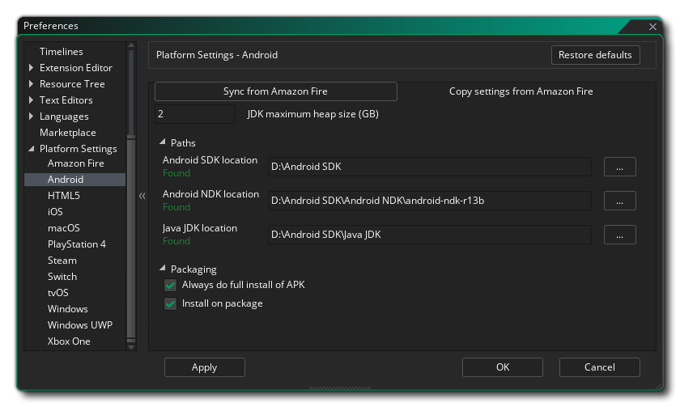
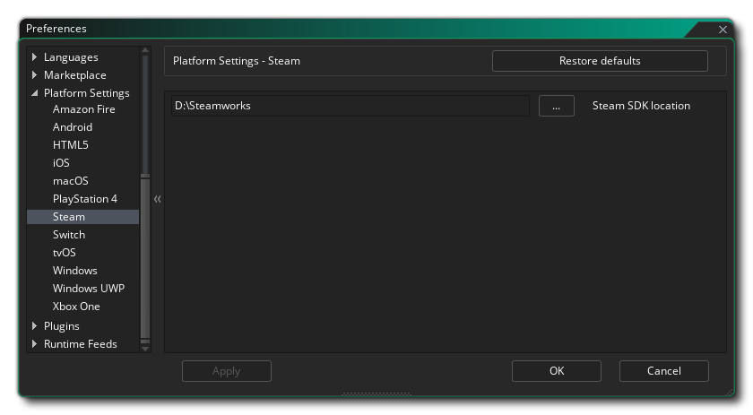

Cette section du manuel couvre les différentes préférences spécifiques à la plate-forme qui doivent être configurées avant de pouvoir compiler vos jeux vers certaines cibles. Ces derniers n'ont généralement besoin d'être configurés qu'une seule fois pour commencer (bien que de futures mises à jour des runtimes puissent vous obliger à changer certaines choses, mais elles seront mentionnées dans les notes de version ) et servent à pointer vers les SDK requis pour savoir comment vous voulez que GameMaker Studio 2 compile vos projets de jeu pour une plateforme donnée. Notez que les plates-formes disponibles dépendent de la licence que vous possédez et qu'elles ne sont pas toutes disponibles.
Voici une liste de toutes les plateformes cibles disponibles et de leurs préférences:
Les préférences Amazon Fire sont divisées en plusieurs sections répertoriées ci-dessous. Un certain nombre d'entre eux se réfèrent aux outils Android, car la cible AMazon Fire est basée sur Android et partage les mêmes exigences SDK.
En haut des préférences, vous avez la possibilité de synchroniser les paramètres de l'exportation Android. Ceci est pour les personnes qui ont la licence mobile et ont déjà configuré et utilisé l'exportation Android, puisque Amazon Fire utilise presque exactement les mêmes outils de construction que Android. Il suffit de cliquer sur ceci pour importer tous les paramètres appropriés d' Android, puis vérifiez-les pour vous assurer qu'ils sont corrects.
Sous le bouton Synchroniser, vous pouvez définir la taille du tas de mémoire pour le JDK Android. Ensuite, vous devez configurer les différents chemins afin que GameMaker Studio 2 sache où GameMaker Studio 2 les différents outils requis pour créer le package exécutable final et tester votre jeu. Ceci est divisé en trois sections pour le Android SDK, Android NDK et Java JDK. Ces chemins devraient être remplis automatiquement pour vous, mais si vous avez des problèmes, vous pouvez cliquer sur le bouton à droite pour ouvrir l'explorateur de fichiers et sélectionner manuellement les emplacements pour chaque élément. Vous pouvez trouver des détails sur les versions requises pour chacun des éléments du SDK ici. Les chemins doivent être validés au fur et à mesure que vous les appliquez et un message affichera «Trouvé» ou vous indiquera des erreurs (auquel cas vous devriez réviser toutes les informations pour vous assurer qu'elles sont correctes).
Ci-dessous vous avez les différentes options d' emballage qui sont:
- Toujours effectuer l'installation complète de l'APK: en marquant cela, GameMaker Studio 2 supprimera de votre appareil les coureurs précédents de votre jeu, ainsi que tous les fichiers associés (par exemple, les fichiers *.ini) avant d'installer une nouvelle version de le jeu.
- Installer sur le paquet: Lorsque cette option est marquée, compiler un exécutable final *.apk package l'installera également automatiquement sur tous les appareils connectés.
Enfin nous arrivons au KeyStore. Ceci est un fichier qui sera utilisé pour "signer" toutes vos applications Amazon Fire alors s'il vous plaît remplir tous les détails correctement et garder à l'esprit que ce fichier sera nécessaire pour créer et mettre à jour toutes vos applications Amazon Fire à l'avenir, ce qui signifie après l'installation, il est conseillé de prendre une capture d'écran des paramètres utilisés et faire une sauvegarde du fichier final. Si vous perdez ce fichier, vous ne pourrez plus mettre à jour les jeux existants qui ont été téléchargés sur le Google Play Store.
REMARQUE: le même fichier de clés peut être utilisé pour les cibles Android et Amazon Fire.
Pour créer un nouveau fichier de clés, les informations suivantes sont requises:
- Nom de fichier: il s'agit du nom du fichier KeyStore. NOTE: Ce n'est pas votre nom ou le nom de l'entreprise, mais le nom du fichier à générer! Si vous avez déjà un fichier keystore de projets antérieurs, vous pouvez cliquer ici sur le bouton du navigateur de fichiers et diriger GameMaker Studio 2 vers l'ancien fichier keystore (ou cliquer sur le bouton Importer ). Dans ce cas, vous devez toujours remplir le reste des informations requises (comme c'était le cas lors de la première génération du fichier) mais vous ne devez pas cliquer sur le bouton Générer un hachage de clé!. Cela va générer un nouveau fichier keystore, écrasant le précédent.
- Nom commun: Ce serait normalement votre nom.
- Mot de passe: Votre mot de passe de sécurité pour le fichier KeyStore qui doit comporter au moins six caractères.
- Alias: Ceci est un autre nom qui peut être utilisé pour le fichier KeyStore et doit être différent du nom entré ci-dessus.
- Unité organisationnelle: Le département au sein de l'entreprise dont vous faites partie.
- Organisation: Le nom de votre entreprise.
- Emplacement: Le nom de la ville ou de la ville où vous êtes basé.
- Pays: le code à deux lettres standard pour le pays où vous êtes basé.
Une fois ces informations renseignées et que vous en êtes satisfait, appuyez sur le bouton GameMaker Générer un hachage de clé pour GameMaker Studio 2 pour créer le fichier KeyStore nécessaire. Cela peut prendre un certain temps mais une fois terminé, il n'aura normalement pas besoin d'être changé à nouveau. Notez que vous pouvez cliquer sur le bouton Importer pour importer un fichier keystore créé précédemment (voir la section Nom de fichier ci-dessus) et vous pouvez également récupérer le hachage SHA1 du fichier de clés en cliquant sur le bouton Afficher le hachage de clé. Si vous appuyez sur cette option, deux clés de hachage de sécurité spéciales, directement liées à votre fichier de clés, sont nécessaires pour que certaines fonctionnalités soient correctes (par exemple, Facebook ou Google Play pour le hachage Sha1). Si vous en avez besoin, appuyez simplement sur le bouton, puis copiez et collez les clés de hachage générées.
Pour plus d'informations sur la configuration des SDK Amazon Fire requis, consultez cet article sur la base de connaissances YoYo Games.
Les préférences Android sont divisées en plusieurs sections répertoriées ci-dessous. 
En haut des préférences, vous pouvez définir la taille du tas de mémoire pour le JDK Android. Ensuite, vous devez configurer les différents chemins afin que GameMaker Studio 2 sache où GameMaker Studio 2 les différents outils requis pour créer le package exécutable final et tester votre jeu. Ceci est divisé en trois sections pour le Android SDK, Android NDK et Java JDK. Ces chemins devraient être remplis automatiquement pour vous, mais si vous avez des problèmes, vous pouvez cliquer sur le bouton à droite pour ouvrir l'explorateur de fichiers et sélectionner manuellement les emplacements pour chaque élément. Vous pouvez trouver des détails sur les versions requises pour chacun des éléments du SDK ici. Les chemins doivent être validés au fur et à mesure que vous les appliquez et un message affichera «Trouvé» ou vous indiquera des erreurs (auquel cas vous devriez réviser toutes les informations pour vous assurer qu'elles sont correctes).
Ci-dessous vous avez les différentes options d' emballage qui sont:
- Toujours effectuer l'installation complète de l'APK: en marquant cela, GameMaker Studio 2 supprimera de votre appareil les coureurs précédents de votre jeu, ainsi que tous les fichiers associés (par exemple, les fichiers *.ini) avant d'installer une nouvelle version de le jeu.
- Installer sur le paquet: Lorsque cette option est marquée, compiler un exécutable final *.apk package l'installera également automatiquement sur tous les appareils connectés.
Enfin nous arrivons au KeyStore. Ceci est un fichier qui sera utilisé pour "signer" toutes vos applications Android alors s'il vous plaît remplir tous les détails correctement et garder à l'esprit que ce fichier sera nécessaire pour créer et mettre à jour toutes vos applications Android à l'avenir, ce qui signifie qu'après il est conseillé de prendre une capture d'écran des paramètres utilisés et faire une sauvegarde du fichier final. Si vous perdez ce fichier, vous ne pourrez plus mettre à jour les jeux existants qui ont été téléchargés sur le Google Play Store.
REMARQUE: le même fichier de clés peut être utilisé pour les cibles Android et Amazon Fire.
Pour créer un nouveau fichier de clés, les informations suivantes sont requises:
- Nom de fichier: il s'agit du nom du fichier KeyStore. NOTE: Ce n'est pas votre nom ou le nom de l'entreprise, mais le nom du fichier à générer! Si vous avez déjà un fichier keystore de projets antérieurs, vous pouvez cliquer ici sur le bouton du navigateur de fichiers et diriger GameMaker Studio 2 vers l'ancien fichier keystore (ou cliquer sur le bouton Importer ). Dans ce cas, vous devez toujours remplir le reste des informations requises (comme c'était le cas lors de la première génération du fichier) mais vous ne devez pas cliquer sur le bouton Générer un hachage de clé!. Cela va générer un nouveau fichier keystore, écrasant le précédent.
- Nom commun: Ce serait normalement votre nom.
- Mot de passe: Votre mot de passe de sécurité pour le fichier KeyStore qui doit comporter au moins six caractères.
- Alias: Ceci est un autre nom qui peut être utilisé pour le fichier KeyStore et doit être différent du nom entré ci-dessus.
- Unité organisationnelle: Le département au sein de l'entreprise dont vous faites partie.
- Organisation: Le nom de votre entreprise.
- Emplacement: Le nom de la ville ou de la ville où vous êtes basé.
- Pays: le code à deux lettres standard pour le pays où vous êtes basé.
Une fois ces informations renseignées et que vous en êtes satisfait, appuyez sur le bouton GameMaker Générer un hachage de clé pour GameMaker Studio 2 pour créer le fichier KeyStore nécessaire. Cela peut prendre un certain temps mais une fois terminé, il n'aura normalement pas besoin d'être changé à nouveau. Notez que vous pouvez cliquer sur le bouton Importer pour importer un fichier keystore créé précédemment (voir la section Nom de fichier ci-dessus) et vous pouvez également récupérer le hachage SHA1 du fichier de clés en cliquant sur le bouton Afficher le hachage de clé. Si vous appuyez sur cette option, deux clés de hachage de sécurité spéciales, directement liées à votre fichier de clés, sont nécessaires pour que certaines fonctionnalités soient correctes (par exemple, Facebook ou Google Play pour le hachage Sha1). Si vous en avez besoin, appuyez simplement sur le bouton, puis copiez et collez les clés de hachage générées.
Pour plus d'informations sur la configuration des SDK Android requis, consultez cet article sur la base de connaissances YoYo Games.
Les préférences iOS ont les options suivantes:
- Identifiant d'équipe par défaut: vous pouvez y ajouter votre identifiant d'équipe par défaut, tel qu'il vous a été attribué par Apple. Cet identifiant d'équipe sera utilisé lorsque vos fichiers de jeu seront envoyés à Xcode pour créer l'application, et permettra à Xcode de générer les certificats de signature requis. Notez que ce paramètre sera appliqué par défaut à tous les jeux créés pour iOS, mais il peut être remplacé par projet à partir des Options de jeu iOS générales.
- Supprimer la génération et l'exécution: par défaut, lorsque vous créez un projet iOS et que vous créez un package exécutable final, GameMaker Studio 2 GameMaker le package, puis tente de l'exécuter sur tous les périphériques connectés. Cochez cette option pour supprimer la création de l'application et l'exécuter sur l'appareil et créer simplement un projet XCode sur le Mac hôte.
- Chemin d'installation de macOS: Chemin d' installation des fichiers de projet sur le Mac de construction.
Les préférences macOS ont les options suivantes:
- Identifiant d'équipe par défaut: vous pouvez y ajouter votre identifiant d'équipe par défaut, tel qu'il vous a été attribué par Apple. Cet identifiant d'équipe sera utilisé lorsque vos fichiers de jeu seront envoyés à Xcode pour créer l'application, et permettra à Xcode de générer les certificats de signature requis. Notez que ce paramètre sera appliqué par défaut à tous les jeux construits pour macOS, mais il peut être remplacé par projet à partir des Options générales du jeu macOS.
Le SDK Steam est utilisé pour les versions Windows, Mac OS et Ubuntu (Linux) qui doivent être distribuées via la Steam forme Steam. Cette section contient les options de configuration nécessaires pour que cela fonctionne dans vos projets: 
- Path To Steam SDK: Le chemin d'accès du système à l'endroit où vous avez installé le SDK Steam. Une fois que vous avez défini ce chemin vers le SDK, vous devez alors activer Steam dans les Options de jeu, puis ajouter pour chaque plate-forme l' ID d'application.
Les préférences Windows ont les options suivantes:
- Chemin d'accès Visual Studio: cette option permet de GameMaker Studio 2 vers l'installation de MS Visual Studio sur le PC de build.
- Type d'empaquetage par défaut: Lors de la création d'un package exécutable Windows final, vous pouvez choisir de créer un programme d' installation (à l'aide de NSIS ) ou un fichier ZIP compressé contenant le jeu et des fichiers supplémentaires. Par défaut, vous aurez le choix entre les deux options que vous souhaitez choisir lors de la compilation, mais vous pouvez définir cette préférence pour toujours utiliser l'une ou l'autre. Notez que lorsque cette option est définie sur Afficher le dialogue, dans la fenêtre de dialogue qui apparaît lors de la compilation, l'option "Mémoriser l'option de conditionnement" définit cette préférence sur l'option sélectionnée.
Les préférences Windows UWP ont les options suivantes:
- Chemin d'accès Visual Studio: cette option permet de GameMaker Studio 2 vers l'installation de MS Visual Studio sur le PC de build.
- Architecture de package par défaut: lors de la création d'un package exécutable Windows UWP final, vous pouvez choisir de créer un package x86, x64 ou ARM contenant le jeu et des fichiers supplémentaires. Ici, vous pouvez définir une valeur par défaut pour le package à utiliser ou sélectionnez Afficher le dialogue pour faire apparaître une fenêtre lorsque vous cliquez sur le bouton de compilation pour savoir lequel choisir. En général, vous souhaitez cibler x86 pour les ordinateurs Windows 10, x64 pour les périphériques Xbox One et ARM pour Windows 10.


Notez qu'en plus de configurer ces préférences, vous devrez également configurer les périphériques que certaines de ces plates-formes ciblent, sinon vous ne pourrez peut-être pas compiler ni tester vos projets. Voir la section sur la compilation et la section sur le Gestionnaire de périphériques pour plus d'informations.